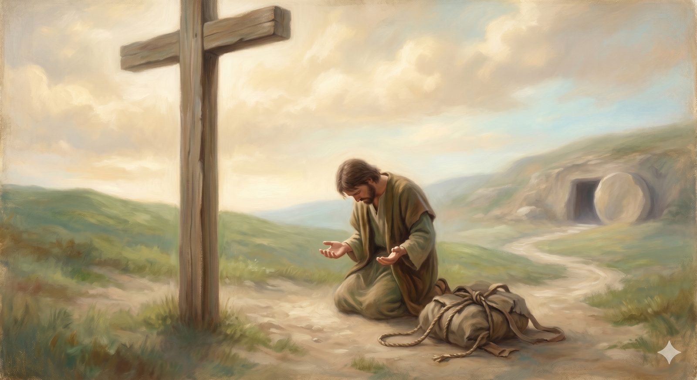

Responding to the Gospel
What it means to come — the response the gospel asks for, at the very place the burden falls.
"...repentance toward God and faith in our Lord Jesus Christ." Acts 20:21 (ESV)
At the foot of the cross, Bunyan tells us, the burden Christian had carried so far loosed from his shoulders, tumbled down the hill, and fell into the open mouth of the sepulchre, to be seen no more. He stood there and wept, and then — this is the detail that matters — he gave three leaps for joy and went on his way singing. The landmark of the Cross has already told us what happened there, and why the burden could fall at all. This room is about the only thing left to consider: how a person actually comes to stand in that place. What is the response the gospel asks for? The New Testament gives it two names — repentance and faith — and both have been so badly misunderstood that they need rescuing before they can be received.
Before anything elseYour need is the qualification
There is one instinct that stops more people at the foot of the hill than any other, and it must be named plainly because it feels so much like humility. Having heard what the gospel says is wrong with us, the natural human response is not to run toward God but to back away. Not yet. Not like this. Let me get better first, and then I will come. It feels like the responsible thing — to present yourself only when you have something worth presenting.
But that instinct is exactly as old as the first sin. In the garden, after Adam and Eve ate the fruit, they did not seek God out to confess; they hid. They sewed leaves to cover themselves, heard him walking, and moved away from him rather than toward him. The shame that was meant to drive Adam toward the only one who could help instead drove him into the bushes, and his answer to God's call told the whole story: I was afraid, because I was naked; and I hid myself. Every attempt to become worthy before approaching God is a version of Adam's leaves — a covering made of things that cannot cover. And it gets the gospel exactly backwards. Your brokenness is not the obstacle to coming to Christ; it is the reason he came. Your need does not disqualify you. It is the precise qualification — the way a sickness is the qualification for a physician.
In plain terms
You do not clean yourself up and then come. You come as you are, mess and all, and the cleaning happens in his hands afterward. Waiting until you are "good enough" is not humility — it is hiding, the way Adam hid. The gospel is for people who cannot fix themselves, which is everyone.
The first wordRepentance is a direction, not a mood
"Repentance" badly needs rescuing from its popular image. It does not primarily mean feeling sorry enough, or groveling, or promising to do better. The Greek word, metanoia, means a change of mind — a turning around, a reorientation of the whole person. Think less of self-punishment and more of the prodigal son in Jesus' parable: he comes to his senses in the far country and turns back toward home, and while he is still a long way off, the father sees him and runs. Repentance is the turning. The father's running is grace. You do not need your life cleaned up before you turn; you turn as you are, and find the father already moving toward you.
And here is the point that orders everything, drawn straight from the way Paul speaks of it: repentance is defined by its direction, not its intensity. In Acts 20:21 he names it as repentance toward God and faith in our Lord Jesus Christ — and the preposition is the whole thing. Repentance is not first a turning from — from sin, from the old life, from the far country. It is first a turning toward: toward God, toward the Father, toward home. The from is real, but it is derivative; it gets its meaning from the toward. This changes the question the anxious soul keeps asking. It is not "have I felt bad enough about what I left behind?" but "am I now facing the right direction?" The grief over sin is real and it deepens — but it follows the turning rather than gating it, and it grows inside the relationship rather than as the price of admission to it.
📖 The Scripture behind this Entailedwhat’s this?›
The claim: Repentance is defined first by its direction — a turning toward God — not by the intensity of sorrow; the turning from sin is real but derivative, flowing from the turning toward.
- Acts 20:21 (ESV) — “testifying … of repentance toward God and of faith in our Lord Jesus Christ.”Paul names repentance with the preposition toward — it is oriented to God.
- Luke 15:18, 20 (ESV) — “I will arise and go to my father … And he arose and came to his father.”The prodigal’s repentance is the turn toward home; the father runs to meet it.
- 1 Thessalonians 1:9 (ESV) — “how you turned to God from idols to serve the living and true God.”The order is stated: turned to God — and so from idols.
The directional reading is drawn from the prepositions and the consistent shape of the texts — good and necessary consequence, not a single proof-text. (This is a framing the site returns to often; flagged so reviewers can weigh the emphasis.)
Repentance is not first a turning from. It is first a turning toward — toward God, toward home. The grief is real, but it follows the turning; it does not buy it.
The second wordFaith is trust, not mere agreement
The other name for the response is faith — and it too is richer than the English word suggests. It is not merely intellectual agreement that certain things are true; even the demons, James says, believe that much, and shudder. The Reformers mapped it with three old words worth knowing, because they show where the real step lies. Notitia — knowing the facts: you understand what the gospel claims. Assensus — agreeing they are true: you are not merely aware of the claims but persuaded by them. And fiducia — personal trust and reliance: the step that makes faith actually faith. It is the difference between believing a chair will hold your weight and actually sitting down in it. It is entrusting yourself to the person the facts point to, and saying, in effect: I trust you with this. I trust you with me.
📖 The Scripture behind this Directwhat’s this?›
The claim: Saving faith is not mere intellectual agreement that the gospel is true, but personal trust — entrusting oneself to the person the facts point to.
- James 2:19 (ESV) — “You believe that God is one; you do well. Even the demons believe—and shudder!”Bare assent is not saving faith — even demons have that much.
- John 1:12 (ESV) — “But to all who did receive him, who believed in his name, he gave the right to become children of God.”Faith is receiving him — personal reception, not just agreement.
- Romans 10:9 (ESV) — “if you confess … and believe in your heart that God raised him … you will be saved.”Belief ‘in the heart’ that issues in confession — trust, not notional assent.
The notitia–assensus–fiducia mapping is a Reformation teaching tool (the three Latin terms are the Reformers’); the underlying distinction — that trust, not bare assent, is saving — is stated directly in Scripture as shown.
That third movement is what standing at the cross consists of. Notice what it is not: it is not a work you perform to earn the gift, not a quality you generate to make yourself acceptable. It is the empty-handed receiving of something already finished. And — this is the quiet miracle underneath it — even the turning is not finally self-produced. If something in you is responding as you read this, that response is already the evidence of God at work in you; you are not manufacturing faith from nothing, you are answering someone who has been calling you for longer than you knew. The chair was built, set down, and offered before you ever considered sitting.
📖 The Scripture behind this Direct / Entailedwhat’s this?›
The claim: Even the turning toward God is not finally self-produced: faith itself is God’s gift and the fruit of his prior work, so the believer answers a call already begun rather than manufacturing faith from nothing.
- Ephesians 2:8–9 (ESV) — “For by grace you have been saved through faith. And this is not your own doing; it is the gift of God, not a result of works.”Salvation through faith is named ‘the gift of God,’ not our own doing.
- Philippians 1:29 (ESV) — “For it has been granted to you that for the sake of Christ you should … believe in him.”Believing is something ‘granted’ — given, not generated.
- John 6:44 (ESV) — “No one can come to me unless the Father who sent me draws him.”Coming to Christ depends on the Father’s prior drawing.
The case for Entailed. The most quoted proof, Ephesians 2:8–9, is honestly a matter of inference at one point: grammatically, ‘this is not your own doing…the gift of God’ refers most naturally to the whole salvation-by-grace-through-faith, and whether faith itself is the specific gift is debated even among careful readers. The doctrine that faith is God’s gift is therefore best established by comparing Ephesians 2 with Philippians 1:29 and John 6:44 — good and necessary consequence — rather than resting the whole weight on the disputed antecedent in one verse.
Where they meet. Scripture states directly that believing is granted and that coming requires the Father’s drawing; the synthesis confirms that faith itself is gift. So the page’s ‘quiet miracle’ — that a response stirring in you is already evidence of God at work — stands on direct statement, steadied by good and necessary consequence.
This is the historic Augustinian and Reformed reading (monergism); it is contested by traditions that hold faith to be the free human response prerogative (synergism). The site takes the Reformed view, and the Annexes treat the Calvinist/Arminian question fairly. Flagged for reviewers.
What God doesFour words for one homecoming
What God does in response to that trust is not a single transaction but a whole new standing, which the New Testament describes from several angles at once. Justification: you are declared righteous — not because you are, but because Christ's righteousness is credited to you; the record is cleared, the verdict is final and not provisional, and there is now no condemnation. Adoption: you are brought into God's own family, not as guest or servant but as a child, given the right to become a child of God — for what is offered is not merely forgiveness but belonging. Union with Christ: the Christian life is not a solo project of self-improvement with occasional help from heaven; it is being joined to a living person, grafted into the vine, his standing becoming yours and his Spirit taking up permanent residence within you. And the beginning of transformation: that indwelling Spirit starts the slow, real, often painful work of remaking you — which, as the road will keep insisting, looks far more like growing dependence on Christ than like conquering your problems by willpower.
These four are not a checklist of perks to tally. They are four descriptions of one thing: being brought, as you are, into living relationship with God through Christ. The burden does not roll away because you finally hauled it off yourself. It falls because you came to the one place it could be set down.
What comes nextThe natural shape of a life that has been met
If you have turned toward Christ — whether just now or long ago — some concrete first steps follow, not as things that earn or secure what you have received, but as the natural shape of a life that has been met by God. Tell someone — a trusted friend, a pastor, the person who pointed you here; speaking it aloud moves the turning from the interior to the relational, which is the natural expression of a heart that has genuinely turned. Begin reading Scripture — start with a Gospel (Mark is the shortest and most direct, John the richest), reading slowly, not studying a textbook but listening to the voice of the person you have entrusted yourself to. Pray — not with polish or performance, but the way you would talk to someone you trust, honestly and without pretending to be further along than you are; the Spirit himself is already interceding for you, so even your most inarticulate words reach the Father exactly right. And move toward community — the Christian life is not built to be lived alone.
That last step will sound, to some who walk this road, less like an open door than like the place the wound happened. If that is you, take heart: the way toward a safe community can be walked slowly and carefully, and the house up ahead — Palace Beautiful, with its watchful porter at the gate — is exactly about how to find one worth entering. For now it is enough to have come, as you are, and to have found the burden gone. Christian wept, and then he leapt, and then he went on singing. The road climbs from here.